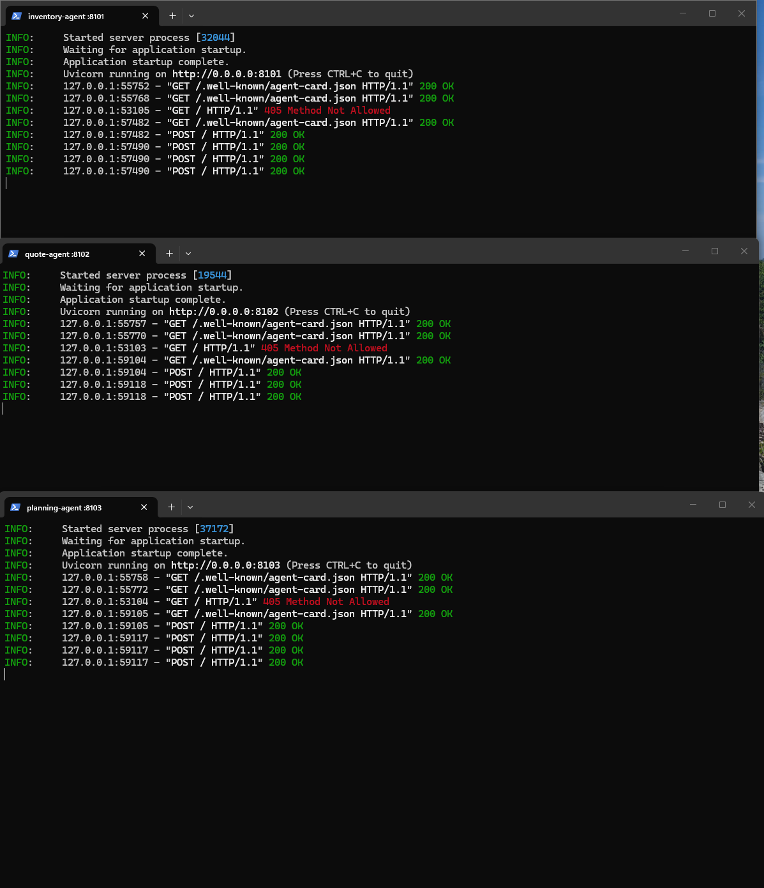
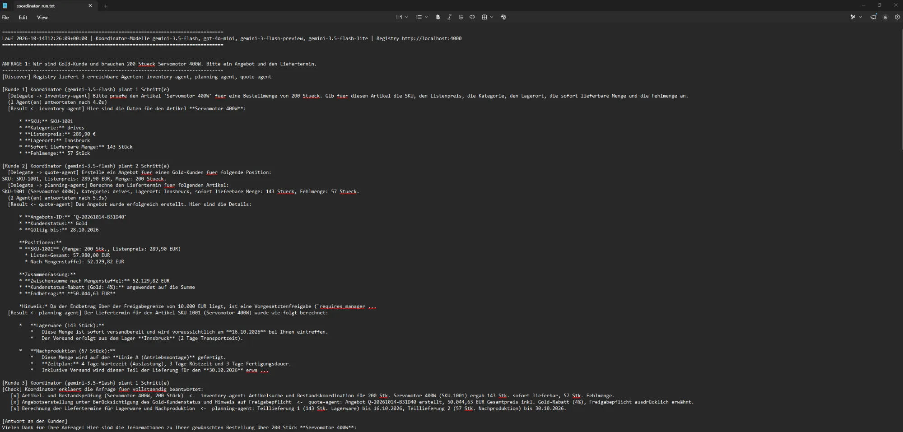
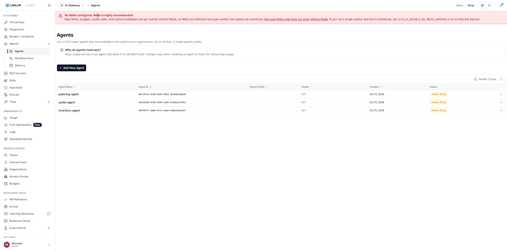
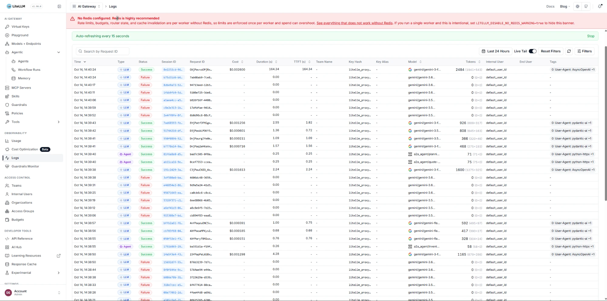

8101
inventory-agentLagerverwaltungArtikel, Listenpreise, Lagerorte und Bestände aus dem Produktbestand von Part 1. Prüft eine Bestellmenge und meldet die Fehlmenge.
Ein Kunde fragt nach Preis und Liefertermin für Industriekomponenten. Drei Fach-Agenten auf eigenen Ports — jeder mit eigenem System — lösen die Anfrage gemeinsam. Ein Koordinator findet sie zur Laufzeit in der LiteLLM-Registry, spricht sie per A2A an und prüft nach jeder Runde, ob die Anfrage vollständig beantwortet ist.
Jeder Agent sieht nur sein eigenes System. Wer Daten aus einem anderen braucht, muss den zuständigen Agenten fragen — die Zusammenarbeit ist damit erzwungen, nicht nur behauptet. Die Agenten laufen bewusst auf verschiedenen Modellen; für die Zusammenarbeit spielt das keine Rolle, sie sprechen A2A.
coordinator.py ──► LiteLLM :4000 ── Registry (Postgres) · A2A-Gateway · LLM-Gateway
│
┌─────────────┼──────────────┐ A2A (message/send, tasks/get)
▼ ▼ ▼
inventory :8101 quote :8102 planning :8103
Lager (SQLite) Preisengine Fertigung (SQLite)
inventory-agentLagerverwaltungArtikel, Listenpreise, Lagerorte und Bestände aus dem Produktbestand von Part 1. Prüft eine Bestellmenge und meldet die Fehlmenge.
quote-agentPreisengineEin Angebot über alle Positionen: marginale Mengenstaffel aus Part 1, Kundenstatus-Rabatt, Angebotsnummer, Gültigkeit. Ab 10.000 € Summe freigabepflichtig.
planning-agentFertigungssteuerungLiefertermine in Arbeitstagen: Lagerware geht sofort in den Versand, Fehlmengen werden auf der passenden Linie eingeplant — Auslastung, Rüstzeit, Tageskapazität, Transport.
agent-card.jsonSelbstbeschreibungJeder Agent liefert Name, Beschreibung und Skills unter /.well-known/agent-card.json.
register_agents.pyRegistrierungLiest die Karten und trägt sie in die LiteLLM-Registry ein. Ports und Namen stehen nur dort.
GET /v1/agents?health_check=trueDiscovery
Der Koordinator holt bei jeder Anfrage die gerade erreichbaren Agenten.
Die erlaubten Ziele seines Werkzeugs delegate_task sind ein
Enum, das jedes Mal neu aus der Registry entsteht.
submit_final_answerPrüfschleife
Die Schleife endet erst, wenn jeder Teil der Anfrage abgehakt ist —
mit Angabe, welcher Agent ihn erfüllt hat. Das schließt die Lücke von
main_dynamic_lookup.py aus der Vorlesung, wo der Router
genau einmal zuweist.
Jedes Ergebnis wurde unabhängig gegen die Rechenfunktionen geprüft. Zwei frühe Läufe lieferten plausible, aber falsche Antworten — beide Ursachen sind behoben:
Geratener LagerortLieferterminOhne Lagerort im Auftrag setzte der Planungs-Agent Innsbruck statt Wien ein — ein Arbeitstag zu früh. Er fragt jetzt nach, statt zu raten, und der Koordinator gibt Kategorie und Lagerort immer mit.
Aufgeteiltes AngebotFreigabeZwei Einzelangebote zu 2.994,00 € und 7.201,68 € lagen je unter der Freigabegrenze, zusammen bei 10.195,68 € darüber. Das Angebot umfasst jetzt alle Positionen; die Grenze gilt für die Summe.
| Anfrage | Angebot | Rabatt | Lieferung |
|---|---|---|---|
| 200× Servomotor 400W, Gold | 50.044,63 | 13,69 % | 143 Stk. +2 (16.10.) · 57 Stk. +12 (30.10.) |
| 50× Druckaufnehmer, Silver | 7.338,66 | 6,16 % | 50 Stk. +7, Wien (23.10.) |
| 3× SPS + 40× IO-Modul, Standard | 10.195,68 | 2,77 % | alles +2 (16.10.) |
Szenario 1 und 3 überschreiten 10.000 € und sind freigabepflichtig (Human-in-the-Loop).
Szenario 1 aus dem Lauf vom 14.10.2026: Runde 1 klärt Bestand und Preis,
Runde 2 beauftragt Angebot und Planung parallel mit diesen Zahlen, Runde 3
hakt jeden Teil der Anfrage ab. Vollständig in logs/coordinator_run.txt.
ANFRAGE 1: Wir sind Gold-Kunde und brauchen 200 Stueck Servomotor 400W.
Bitte ein Angebot und den Liefertermin.
[Discover] Registry liefert 3 erreichbare Agenten: inventory-agent, planning-agent, quote-agent
[Runde 1] Koordinator (gemini-3.5-flash) plant 1 Schritt(e)
[Delegate -> inventory-agent] Bitte pruefe den Artikel 'Servomotor 400W' fuer
eine Bestellmenge von 200 Stueck. Gib … SKU, Listenpreis, Kategorie, Lagerort,
sofort lieferbare Menge und Fehlmenge an.
(1 Agent(en) antworteten nach 4.0s)
[Result <- inventory-agent] SKU-1001 · drives · 289,90 € · Innsbruck ·
sofort lieferbar 143 Stück · Fehlmenge 57 Stück
[Runde 2] Koordinator (gemini-3.5-flash) plant 2 Schritt(e)
[Delegate -> quote-agent] … Gold-Kunden … SKU-1001, Listenpreis: 289,90 EUR, Menge: 200
[Delegate -> planning-agent] … Kategorie: drives, Lagerort: Innsbruck,
sofort lieferbare Menge: 143 Stueck, Fehlmenge: 57 Stueck.
(2 Agent(en) antworteten nach 5.3s)
[Result <- quote-agent] Angebots-ID Q-20261014-B31D40 … Nach Mengenstaffel:
52.129,82 EUR … Endbetrag: 50.044,63 EUR … Freigabegrenze von 10.000 EUR …
[Result <- planning-agent] Lagerware (143 Stück) … am 16.10.2026 bei Ihnen …
Nachproduktion (57 Stück) … Linie A (Antriebsmontage) … 30.10.2026
[Runde 3] Koordinator (gemini-3.5-flash) plant 1 Schritt(e)
[Check] Koordinator erklaert die Anfrage fuer vollstaendig beantwortet:
[x] Artikel- und Bestandsprüfung (Servomotor 400W, 200 Stück) <- inventory-agent
[x] Angebotserstellung … Hinweis auf Freigabepflicht <- quote-agent
[x] Berechnung der Liefertermine für Lagerware und Nachproduktion <- planning-agent

POST / für message/send und tasks/get.
Das rote GET / 405 ist kein Fehler: Der Health-Check fragt per GET,
der A2A-Endpunkt nimmt nur POST an — LiteLLM wertet jeden Status unter 500 als erreichbar. Agent Card, Registry-Health-Check (405 = GET auf den POST-Endpunkt, kein Fehler), dann die A2A-Requests.
logs/coordinator_run.txt: Discover, Bestand in Runde 1, Angebot und
Planung parallel in Runde 2, abgehakte Checkliste in Runde 3. Szenario 1: Bestand, dann Angebot und Planung parallel, Checkliste.
register_agents.py. „Needs Setup" zeigt nur an, dass kein eigener
Virtual Key zugewiesen ist — lokal nicht nötig. Die drei Agenten in der LiteLLM-Registry.
a2a_agent/…), Typ „LLM" die Modellaufrufe der Agenten (pydantic-ai) und
des Koordinators. Die roten Zeilen sind vom Free Tier abgelehnte Versuche (429), auf
die der Koordinator mit Modellwechsel reagiert. A2A- und LLM-Aufrufe; rote Zeilen = 429 des Free Tiers, Modellwechsel.Bilder anklicken für die volle Auflösung.
Claude (Anthropic) habe ich als Hilfsmittel verwendet. Konzeption, Umsetzung und Programmierung habe ich selbst durchgeführt. Claude diente lediglich zum Erstellen der Abgabedokumente sowie als Hilfestellung bei einzelnen Schritten, bei denen ich nicht mehr weitergewusst habe.